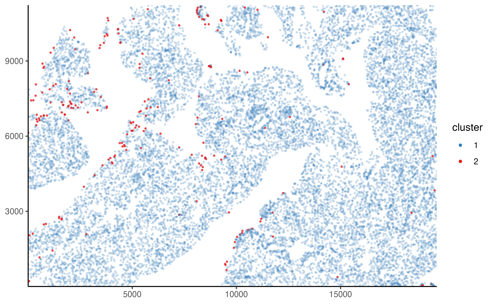

manual-classification.RmdThe following is a simple demonstration of conducting a manual classification of cells into either FITC low or FITC high.
Some example data is shipped with the ‘PackageBluishgreen’ package. They can be accessed using the system.file() function as demonstrated below.
list.files(system.file("extdata", package = "PackageBluishgreen"))
#> [1] "unmicst-OP1165_liver_TUNEL_01.csv"
#> [2] "unmicst-OP1181_pancreas_TUNEL_01.csv"
#> [3] "unmicst-OP1513_lung_TUNEL.csv"
#> [4] "unmicst-OP1704_colon_TUNEL_02.csv"
#> [5] "unmicst-OP1704_skeletal-muscle_TUNEL.csv"We will use the pancreas data set from mouse OP1181.
pancreas_data <- read_csv(system.file(
"extdata",
"unmicst-OP1181_pancreas_TUNEL_01.csv",
package = "PackageBluishgreen"
))
#>
#> ── Column specification ────────────────────────────────────────────────────────
#> cols(
#> CellID = col_double(),
#> DAPI_nucleiMask = col_double(),
#> FITC_nucleiMask = col_double(),
#> X_centroid = col_double(),
#> Y_centroid = col_double(),
#> column_centroid = col_double(),
#> row_centroid = col_double(),
#> Area = col_double(),
#> MajorAxisLength = col_double(),
#> MinorAxisLength = col_double(),
#> Eccentricity = col_double(),
#> Solidity = col_double(),
#> Extent = col_double(),
#> Orientation = col_double()
#> )
head(pancreas_data)
#> # A tibble: 6 x 14
#> CellID DAPI_nucleiMask FITC_nucleiMask X_centroid Y_centroid column_centroid
#> <dbl> <dbl> <dbl> <dbl> <dbl> <dbl>
#> 1 1 37342. 6472. 1026. 3.30 1026.
#> 2 2 14341. 6447. 1223. 3.34 1223.
#> 3 3 22004. 3979. 1429. 4.83 1429.
#> 4 4 15927. 4363. 1539. 4.36 1539.
#> 5 5 26581. 5615. 1598. 7.38 1598.
#> 6 6 16426. 5169. 1732. 1.74 1732.
#> # … with 8 more variables: row_centroid <dbl>, Area <dbl>,
#> # MajorAxisLength <dbl>, MinorAxisLength <dbl>, Eccentricity <dbl>,
#> # Solidity <dbl>, Extent <dbl>, Orientation <dbl>We should first clean the column names and reduce clutter by keeping only the columns we will use.
pancreas_data <- pancreas_data %>%
janitor::clean_names() %>%
select(
cell_id,
x = x_centroid,
y = y_centroid,
fitc = fitc_nuclei_mask
)
head(pancreas_data)
#> # A tibble: 6 x 4
#> cell_id x y fitc
#> <dbl> <dbl> <dbl> <dbl>
#> 1 1 1026. 3.30 6472.
#> 2 2 1223. 3.34 6447.
#> 3 3 1429. 4.83 3979.
#> 4 4 1539. 4.36 4363.
#> 5 5 1598. 7.38 5615.
#> 6 6 1732. 1.74 5169.First, we must make a tissue slide object. We can then apply a manual classification (or any other support methods) to this object. The tissue slide can also hold metadata.
pancreas_slide <- tissue_slide(pancreas_data, metadata = list(tissue = "pancreas", mouse = "OP1181."))
get_slide_metadata(pancreas_slide)
#> $tissue
#> [1] "pancreas"
#>
#> $mouse
#> [1] "OP1181."The next step is to visualize the data. We can use the plot_tissue() function to plot the cells on the slide, colored by their FITC intensity.
plot_tissue(pancreas_slide, color = fitc)It often helps to log-transform the signal intensity.
plot_tissue(pancreas_slide, color = log10(fitc))We can also see the distribution of FITC intensities using the plot_density() function.
plot_density(pancreas_slide, log10(fitc))For this example, our goal is to just capture the top percent of the cells, those that are deep red in the image above. Judging from the plot, it looks like a value just above \(log_{10} 4.3\) should work. The classification can be applied to the lung slide using the cluster_manually() function. Note that the transform function must be passed to the transform parameter so it can be used in other operations.
pancreas_slide <- cluster_manually(pancreas_slide, fitc, 4.3, transform = log10)The classification results can be visualized using the () function.
plot_slide_clusters(pancreas_slide, method = "manual")
A summary of the classification results can be obtained using the summarize_cluster_results() function.
summarize_cluster_results(pancreas_slide)
#> # A tibble: 2 x 2
#> manual_cluster n
#> * <fct> <int>
#> 1 1 66244
#> 2 2 787Mistakes or questions? Open an issue on Github.